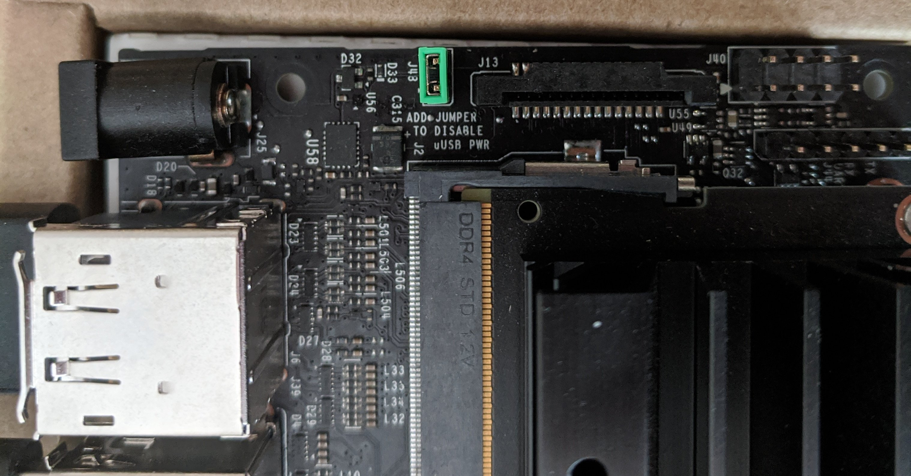
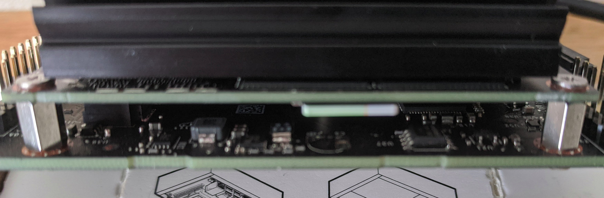

Chapter 2 Setting up the Jetson Nano
2.1 What to buy
A Jetson Nano: You can buy kits with power supplies, enclosures and such, and even robot kits with a Nano. Or you can just buy a Nano directly, which is what I did. If you want to go that route, start here:1
Networking: The Nano has an Ethernet jack, so if you have wired internet you’ll just need a cable. If you want wireless, the USB adapter in the “Prepare for Setup” tab of2 is fine.
Power supply: There are two ways to power the Nano, micro USB port or barrel jack. I highly recommend the barrel jack option. See,3 “Other Power Supply Options,” for the details.
If you’re going with a kit, check the power supply that comes with it before you order. Make sure it’s a barrel jack model, not a micro USB one.
The barrel jack option requires a jumper on the board to work. It’s a little tricky to find. It’s on the top of the board between
8and9in the diagram.
microSD card: The 16 GB minimum specified is not enough! The operating system after flashing takes up 12 GB, which leaves you only 4 GB. I recommend at least 128 GB and I’m currently running on a 256 GB one.
The microSD slot is also tricky to find. The diagram shows it “somewhere on the back,” where “front” is defined as the edge with the USB ports and the power barrel jack. You’ll have to pick up the Nano (unplugged, of course) by the heat sink and look closely in a bright light to find it. It’s on the board just under the heat sink about a third of the way from the edge with the power barrel jack. Insert the card with the contact end first and the contacts facing the board.

Display: any HDMI or DisplayPort display will work. I have two; a 23-inch Dell monitor and one of those little 7" touch-sensitive ones that people use with Raspberry Pi kits. The Nano has a full Ubuntu 18.04 LTS “Bionic Beaver” desktop, so I don’t recommend the small ones. But you can also access the Nano via SSH or VNC remotely, and the small display is fine for setting things up.
Mouse and keyboard: Most of the USB wireless mice and keyboards work, as do the wired ones. I like keyboard / trackpad and keyboard / trackball combos with a single USB wireless plug; the one I have is a Logitech K400+. Make sure you get one that’s wireless and not Bluetooth; the Nano doesn’t have Bluetooth.
2.2 Flashing and initialization
The instructions in the “Write Image to the microSD Card” tab of4 work well. Balena Etcher works on Linux, Mac and Windows; I’ve used it from both Windows and Linux.
2.3 Setup and first boot
The instructions in the “Setup and First Boot” tab of5 are fine. I would advise reading the licensing part carefully. The NVIDIA offerings are a mix of proprietary and open source with various licenses, and if you have plans beyond just enjoying and exploring, I’d recommend engaging an attorney.
If you have a wired internet connection, the setup process will find it and configure it automatically. If you have a wireless adapter, the setup process will find it and give you a dialog to connect to the wireless. It will also set up your keyboard and time zone and let you define a user name, user ID, computer name and password. The usual warnings about passwords apply here.
The last step in the setup process is expanding the microSD card capacity. When you flashed the card, the flash program copied a binary image onto the first part of the card, leaving the rest unused.
The binary image is about 12 gigabytes. That means if you have a 256 GB micro SD card, about 244 GB of it would be unused. This step grows the 12 GB existing filesystem into the entire card. Just accept the default size and press “Continue.”
One final recommendation: if you want to do things with the Jetson hardware, I highly recommend JetsonHacks.6